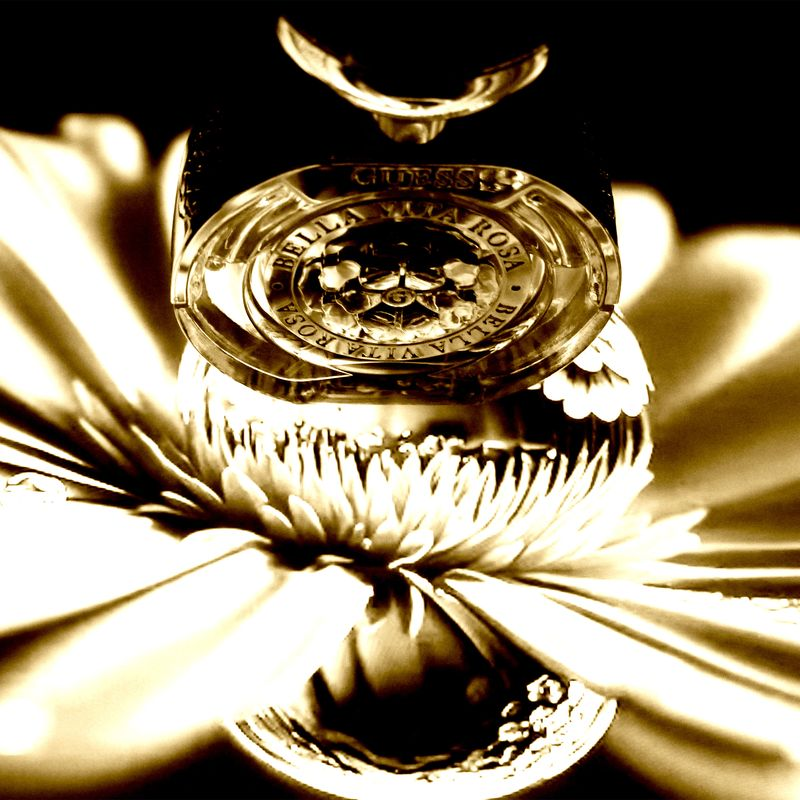

2023 - 2024
photographies
réglages appareil
Réalisation de prises de vues sur le thème de l’équilibre de trois objets. L’objectif est de trouver le bon balancement entre l’ISO, le temps de pose et la focale.
Autres photos, exploration d'univers visuels.